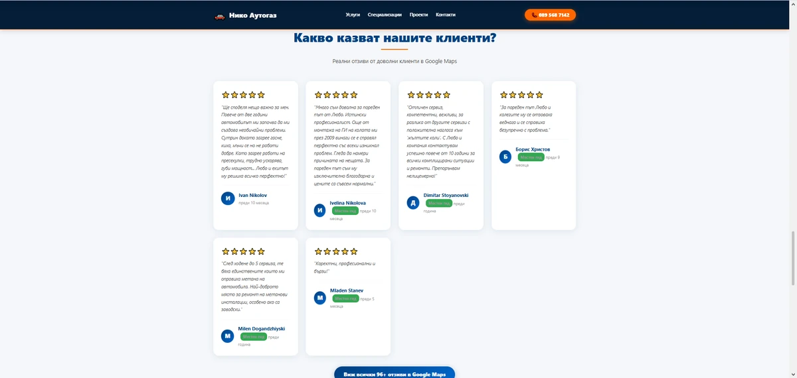

Case studies на HTML сайтове с реални резултати
Вижте как нашите HTML сайтове водят до повече доверие, по-бърза реакция и по-ясен път до контакт. Тук са проектите, които показват защо този модел продава по-добре.
Ако искаш подобен резултат за твоя бизнес, изпрати запитване или виж цената.
WordPress → HTML миграция с реални данни
Имаме и конкретен пример с BDinHost среда, където една и съща идея е тествана във WordPress и в чист HTML, с ясно измерими разлики.
Резултатът: PageSpeed 74 срещу 100 и structured data 3 срещу 13.


Виж пълното сравнение в статията за WordPress за малък бизнес
Проекти, разработени от MOVER Studio
Тези сайтове са резултат от нашата експертиза в HTML разработка без WordPress. Всеки проект е създаден с фокус върху резултати, скорост и ясен път към запитване.
Резултати
PageSpeed
74 → 100 в реален WordPress → HTML тест.
Structured data
3 → 13 структурирани елемента в същия сценарий.
Локални страници
14 локации при multi-location проекта за Пътна Помощ София.
Доверие
96+ Google reviews в проекти с review integration и trust badges.
Графики и сравнения
WordPress vs HTML: PageSpeed 74 срещу 100 и structured data 3 срещу 13.
Логика: по-малко runtime, по-малко зависимости, по-бързо зареждане и по-добра техническа основа за SEO.
| Показател | WordPress | HTML |
|---|---|---|
| PageSpeed | 74 | 100 |
| Structured data | 3 | 13 |
| Тежест | По-висока | По-ниска |
Защо HTML Понякога Дава По-Силен SEO Резултат
WordPress сайтове имат баласт: PHP, бази данни, плъгини, теми. HTML сайтове са чисти, бързи, сигурни. Google ги обича.
HTML Сайтове
- 100/100 PageSpeed
- 0 external dependencies
- Perfect Core Web Vitals
- No database queries
- Instant loading
- Zero maintenance
WordPress Сайтове
- 50-70/100 PageSpeed
- 50+ external scripts
- Poor Core Web Vitals
- Database bottlenecks
- Slow loading
- Constant updates needed
Клиенти и проекти
roadassistancesofia.bg
14 локации, локално SEO и multi-location архитектура.
matiyhelp.bg
4 езика и отделни локационни страници с ясна структура.
re-peat.store
100/100/100/100 Lighthouse резултат и локален conversion фокус.
nikoautogaz.github.io
GitHub Pages проект с review интеграция и силни trust сигнали.
Детайлни Case Studies
roadassistancesofia.bg – Мулти-локационен модел за по-широка видимост


Какво значи това за бизнеса:
- Георегионална стратегия: 14 отделни HTML страници (sofiq.html, trebich.html, ilienci.html...) с уникално H1 таргетиране
- Inline критичен CSS/JS: Елиминирани са render-blocking requests - целият styling е в <style> тага
- Zero external dependencies: Никакви CDN библиотеки, framework-ове или external scripts
Как се подрежда за търсене:
- Всяка подстраница съдържа: локално H1 (<h1>Пътна Помощ [Район]</h1>), уникален description meta tag, локални ключови думи в content
- Структурирана навигация с anchor links към всяка локация
- Schema.org LocalBusiness микроразметка дублирана за всяка зона
Как се пази скоростта:
- WebP изображения с <picture> fallback
- Lazy loading на галериите
- Минифициран HTML без whitespace
patna-pomosht-kostinbrod.bg – Калкулатор за по-бърз път до оферта


Как помага на заявките:
- Vanilla JavaScript калкулатор интегриран в статичен HTML без React/Vue overhead
- Калкулаторът работи изцяло client-side - никакви API calls или backend
- Dynamic pricing calculation базирана на kilometric input и vehicle weight
Как покрива повече локации:
- 11 location-specific pages (kostinbrod.html, godech.html, buchin.html...)
- Всяка страница има identical layout, но unique H1/title/meta за локалното SEO
- Internal linking structure между всички локации за crawl efficiency
Как подсилва доверието:
- Микроразметка AggregateRating с hardcoded 5.0 стойност и review count
- Trustindex и Google review badges вградени като structured data
- CTA buttons с tel: protocol за директна мобилна конверсия
matiyhelp.bg – Езикова версия за различни пазари


Как работи на различни езици:
- 4 отделни HTML файла: index.html (BG), index-en.html, index-ro.html, index-tr.html
- Няма i18n библиотеки, JSON files или dynamic content switching
- Всеки език = independent page с пълен content duplication
Какво печели бизнесът:
- Search engines индексират всеки език като отделна страница
- Zero JavaScript overhead за language switching
- Hreflang tags за multi-regional targeting
re-peat.store – Локален conversion фокус


100/100/100/100 Lighthouse резултат и локален conversion фокус.
nikoautogaz.github.io – GitHub Pages + CI/CD Workflow



Deployment Strategy:
- GitHub repository като hosting platform
- Git version control за всяка промяна в кода
- Automatic deployment при push to main branch
Review Integration:
- Structured data за 96+ Google reviews
- Individual review cards с име, rating stars, текст
- Link към пълния Google Maps profile за external validation
MOVER Studio Methodology: Common Technical Patterns Across All Sites
- Zero CMS Dependency - Pure HTML/CSS/JS без WordPress, Joomla, или database
- Inline Critical CSS - Всички стилове в <style> tag за eliminate render-blocking
- Schema.org Markup - LocalBusiness, Service, Review, Person structured data
- WebP Images - Modern format с fallbacks за browser compatibility
- Mobile-First Design - Responsive layouts с CSS Grid/Flexbox
- Direct CTAs - tel: links за instant mobile conversion
- Fast Hosting - Професионален хостинг за максимална скорост и сигурност
- Multi-Location Pages - Dedicated HTML files за всяка geographic zone
- Internal Linking - Strategic cross-linking между локации и услуги
- No External Dependencies - Никакви jQuery, Bootstrap, Font Awesome bloat
Result: Мигновено зареждане, стабилна индексация и силно локално SEO представяне.
Testimonials и публични отзиви
Реален източник на доверие: структурирани данни за 96+ Google reviews, review cards и Trustindex badges вече присъстват в някои от проектите.
Важно: не добавяме измислени цитати. Тук показваме публично проверими сигнали за удовлетвореност и репутация.
Ако искаш, тази секция може да се разшири с реални текстови отзиви от клиенти, когато са налични.
Какво Показват Тези Проекти За Твоя Бизнес
Всеки проект показва как HTML без WordPress води до силно нишово представяне чрез скорост, локално таргетиране и доверие. Ако искаш подобен резултат, изпрати запитване за кратка преценка и ясна следваща стъпка.
Ако търсиш конкретен пример за миграция WordPress → HTML, виж и сравнението с PageSpeed 74 срещу 100 и structured data 3 срещу 13.
Искаш ли такива резултати и за твоя сайт?
Изпрати ни какъв е бизнесът ти и ще ти кажем откровено какъв модел има смисъл.
Искаш ли подобен резултат за твоя бизнес?
Виж какво можем да направим за твоя бизнес с HTML сайт без WordPress.